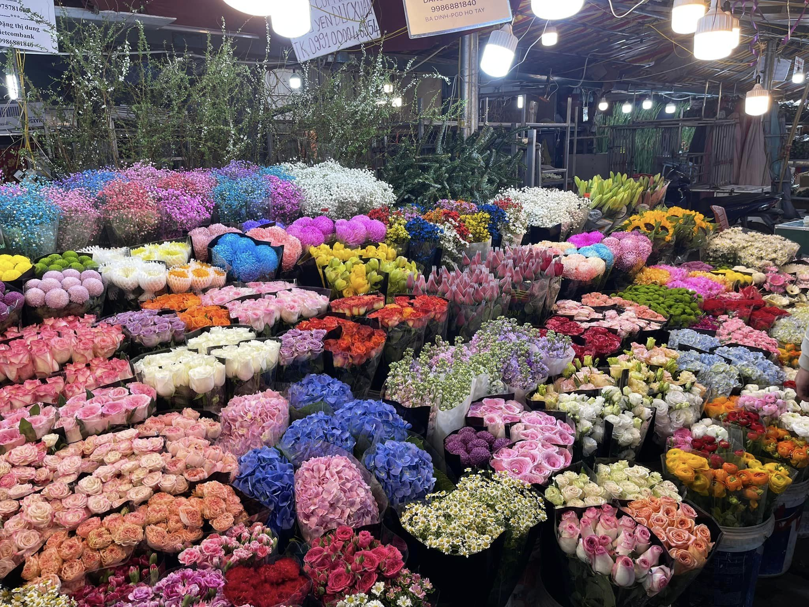
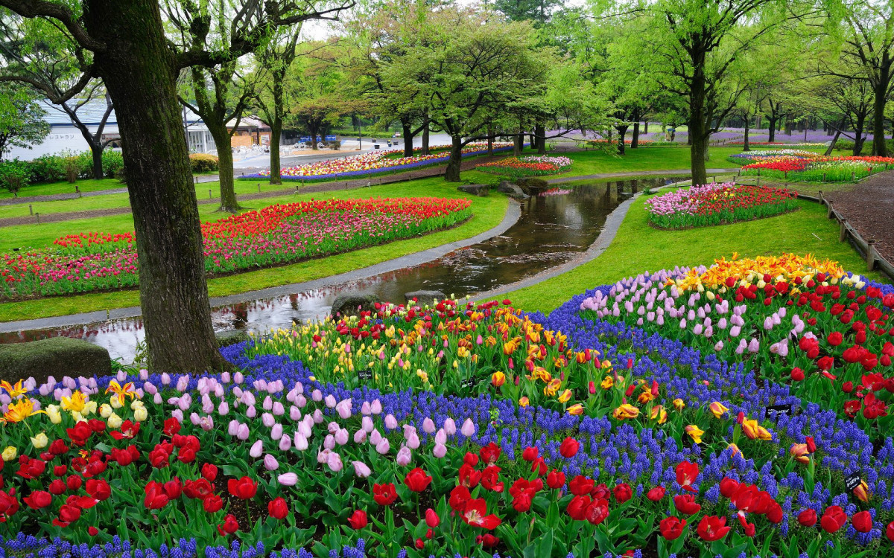

Lan tỏa thông điệp tích cực
"Xuân Yêu Thương" không chỉ đơn thuần là một hoạt động từ thiện mờ nhạt, mà đã trở thành dấu ấn khó phai trong quá trình trưởng thành của mỗi thành viên.
Có người từng nói: "Đôi bàn tay tặng hoa hồng bao giờ cũng phảng phất hương thơm". Tham gia "Xuân Yêu Thương", những người tham gia nhận lại được nhiều hơn những gì họ cho đi. Đó là bài học quý giá về lòng biết ơn, sự đồng cảm và trách nhiệm đối với xã hội.
Thông qua việc chứng kiến những mảnh đời còn nhiều thiếu thốn, thế hệ trẻ hiểu ra giá trị của những gì mình đang có, từ đó biết trân trọng cuộc sống, vượt qua những ích kỷ cá nhân để sống trọn vẹn và ý nghĩa hơn. Chúng tôi hi vọng rằng, những hạt mầm nhân ái được gieo trồng hôm nay sẽ nở ra những bông hoa tươi đẹp nhất cho tương lai cộng đồng.
Chương trình cũng là minh chứng rõ nét cho sự chung sức, đồng lòng của nhà trường, phụ huynh và toàn thể học sinh. Một sức mạnh tập thể được tạo ra không chỉ hoàn thành chỉ tiêu đề ra mà còn là động lực to lớn thúc đẩy phong trào thiện nguyện nói chung.

Gắn kết cộng đồng với sự sẻ chia
Chương trình khuyến khích và tạo cơ hội để mỗi cá nhân có dịp ngồi lại cùng nhau vì một mục đích chung. Rào cản giữa các thế hệ được xóa nhòa, thay vào đó là sự gắn kết chặt chẽ. Từ quá trình lên kế hoạch đến lúc thực thi dự án, bạn bè hiểu nhau hơn, thầy trò sát cánh bên nhau, tạo nên bức tranh đầy tính đoàn kết.

Nuôi dưỡng Tâm hồn thanh thiếu niên
Tuổi trẻ là quãng thời gian rực rỡ nhất để rèn luyện nhân cách. Thông qua những nhọc nhằn và niềm vui của công việc tình nguyện, mỗi học sinh trải nghiệm được sâu sắc triết lý "cho đi là còn mãi", bồi đắp lòng nhân từ, sự thấu cảm, góp phần đào tạo ra những công dân tốt, có ích cho xã hội mai sau.